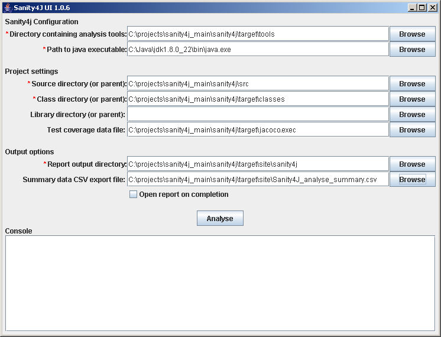
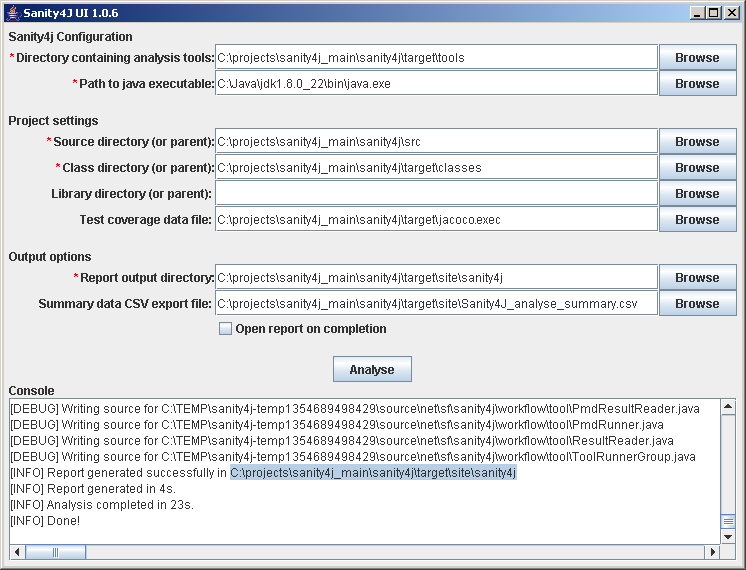

Sanity4J provides a stand-alone GUI for developers to run ad-hoc static code analysis on projects for assisting in code reviews. The GUI can be launched by opening the jar file from a file manager (e.g. double-clicking on sanity4.jar in Microsoft Windows Explorer) or run using the following command line:
java -jar sanity4j.jar
After launching the application, the UI will appear, which is used to configure and run the analysis.
Fields for mandatory configuration parameters are marked with an asterisk. The "Open report on completion" check-box will open the Sanity4J report once the analysis is complete (Java 1.6+ only). The console area shows the progress during analysis as well as any warnings/errors which have been output by the analysis tools.
The complete list of parameters is decribed in the table below.
| Parameter | Description | Required |
|---|---|---|
| Directory containing analysis tools | This parameter must point to a directory containing all the tools in use. For example, with a default configuration, these could be findbugs-2.0.1, pmd-5.0.4, checkstyle-5.6 and cobertura-2.0.1. | Yes |
| Path to java executable | The full path to the java run-time to use. | Yes |
| Source directory (or parent) | This should be set to the location of the project's source only. If you have multiple source directories contained within a main directory, you can just list the main directory here - Sanity4J will search for all nested source directories. | Yes |
| Class directory (or parent) | This should be set to the location of the project's built classes only. If you have multiple output directories contained within a main directory, you can just list the main directory here - Sanity4J will search for all nested classes/jars. | Yes |
| Library directory (or parent) | This parameter should be set to the location of jars / classes which the target project depends on. Don't use e.g. an entire local maven repository; only include direct dependencies. | No |
| Test coverage data file | The location of a coverage data file (e.g. cobertura.ser for Cobertura) if you want to include unit testing coverage data in your report. | No |
| Summary data CSV export file | The location of a (persistent) summary data file if you want to include trend graphs over time. | No |
| Report output directory | The report output directory. This parameter defaults to the project's site directory. | Yes |
Using the "Browse" buttons to the right of each field will bring up a file dialog for easier selection of the appropriate items.
Repeat the process for the remaining options. On exit Sanity4J will save the options as defaults for the next time the GUI is run.
Click the "Analyse" button to start the analysis. Once the analysis is complete, the report can be opened from the file "index.html" in the report output directory which was entered.
